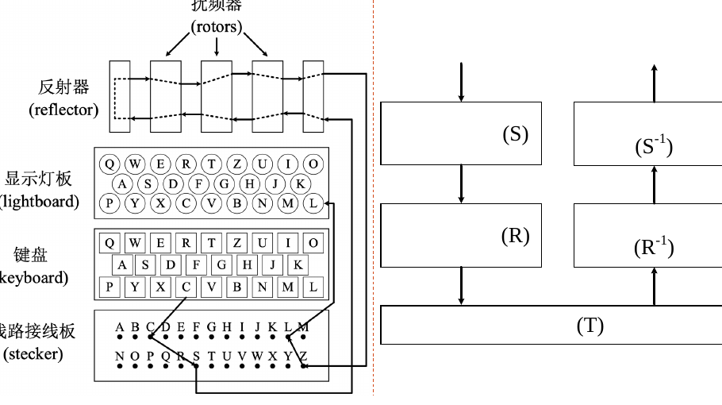

破解 Enigma 机¶
来源：
密码分析学 / notes/02-古典密码/破解Enigma机.md
从机器结构看密钥¶
Enigma 逐字母加密。信号先经过接线板，再依次经过转子组、反射器，随后沿转子的逆向线路和接线板返回，最后点亮一个密文字母。每输入一个字母，转子状态会改变，所以同一个明文字母在不同位置通常得到不同密文。

图源：第 2 章课件，第 9 页。图中的 \(S\) 表示接线板，\(R\) 表示当前转子组。
若接线板置换为 \(S\)、当前转子置换为 \(R_t\)、反射器为 \(T\)，位置 \(t\) 的加密可写成
接线板交换成对字母，因此 \(S^{-1}=S\)。反射器也由互换的字母对构成，满足 \(T^{-1}=T\) 且没有不动点。由此可见，加解密使用相同的机器设置；对同一位置，\(E_t^{-1}=E_t\)。
接线板¶
若 26 个字母中有 \(l\) 对相连，先选出 \(2l\) 个字母，再把它们两两配对，设置数为
课件将接线板设置记为 \(K_1\)。未连接的字母映射到自身；已经连接的两字母互换，不能与其他连接重复使用。
例如 \(l=10\)： 先从 26 个字母中选出 20 个，再把它们两两配成 10 对。代入公式得到 \(150738274937250\) 种接线设置。除以 \(2^{10}\) 是因为每对的两个字母交换顺序不产生新接线；除以 \(10!\) 是因为 10 对连线的排列顺序也不产生新接线。
转子与反射器¶
每个转子的内部接线是固定置换。课件的简化模型以三个转子的起始位置作为 \(K_2\)，在转子型号和顺序固定时共有 \(26^3\) 种。快速转子频繁转动，刻痕使其他转子随之转动，于是加密位置改变时，整机置换 \(E_t\) 也改变。
以这个简化模型为例，三个起始位置各有 26 种可能，因此总数是 \(26\times26\times26=17576\)。如果额外要求从 5 个不同转子中选 3 个并排定顺序，则转子选择还要乘以 \(5\times4\times3=60\)；这个因子只有在转子选择和顺序也属于待猜设置时才计入。
课件用快转子、中转子、慢转子的转动解释多表代换：随着逐字输入，同一组内部连线在不同位置形成不同的字母置换。分析 crib 时，每个字母位置都使用对应时刻的转子状态 \(R_t\)。
反射器使信号返回。因为 \(E_t\) 是无不动点置换 \(T\) 的共轭，对任意字母 \(a\) 都有 \(E_t(a)\ne a\)：Enigma 不会把一个字母加密成它自己。这是寻找明文片段的关键约束。
从密文寻找 crib¶
Crib 是猜测的明文片段及其在截获密文中的对应位置。天气报告中的固定词、通信格式或人工操作习惯都可能提供猜测。逐个移动猜测片段，只要出现某个位置“明文字母 = 密文字母”，便排除该对齐位置。通过这种方式得到的 crib 仍是候选，需要后续机器设置验证。
课件以 WETTER 与一段密文的对齐为例。某个可行对齐不仅满足“字母不加密为自身”，还可形成首尾相接的字母关系：
截获密文为 AETJWPXER，已猜测明文包含 WETTER。逐一比较四个对齐位置：
| 起始位置 | 对应密文 | 检查结果 |
|---|---|---|
| 1 | AETJWP |
明文、密文第 2 位均为 E，第 3 位均为 T，排除 |
| 2 | ETJWPX |
六个对应位置都不同，可以保留 |
| 3 | TJWPXE |
六个对应位置都不同，可以保留 |
| 4 | JWPXER |
第 5 位均为 E，第 6 位均为 R，排除 |
剩下两个对齐都满足“没有字母加密为自身”的条件，接着用环路和接线板约束继续筛选。

图源：第 2 章课件，第 29 页。六列对应连续的文字位置，环路使用第 1、2、4 列。
怎样从 crib 找到环路？¶
对保留的第 2 个对齐，逐列写出关系：
| 位置 \(t\) | 1 | 2 | 3 | 4 | 5 | 6 |
|---|---|---|---|---|---|---|
| 明文 | W | E | T | T | E | R |
| 密文 | E | T | J | W | P | X |
第 1 列给出 \(W\to E\)，第 2 列给出 \(E\to T\)，第 4 列给出 \(T\to W\)，首尾连起来就是
第 3 列虽然没有用于这个环，也对应一个真实的转子步进位置；所以图上第 2 条边到第 4 条边之间跳过了一个位置，不能把第 4 列当作紧接第 2 列后的机器状态。第 3、5、6 列给出的 \(T\leftrightarrow J\)、\(E\leftrightarrow P\)、\(R\leftrightarrow X\) 则可用于之后推导接线板设置。
环路如何分割搜索空间¶
如果直接枚举接线板和转子，必须同时检验 \(K_1\times K_2\) 的组合。环路把两部分暂时分开：
- 对每个候选转子设置 \(K_2\)，依照 crib 中各位置连接若干台处于相应转子状态的机器。
- 从某个字母开始沿环路传递。若候选设置与真实设置相容，接线板的未知置换在闭合环路中会相互抵消，必须得到一致的“输入字母回到自身”的结果。
- 用课件中的“亮灯测试”筛选候选转子设置，再由其他 crib 字母推导接线板连接。若一个字母被迫同时连接两个不同字母，就产生冲突并排除该候选。
- 用更多 crib、其他环路和解出的明文验证余下设置。
课件的随机模型中，错误候选出现至少一个亮灯位置的概率约为 \(63.2\%\)，即随机置换至少有一个不动点的概率。因此，亮灯候选还要经过其他环路和接线冲突检查。
环路怎样消去未知接线板？¶
令 \(F_t=R_t^{-1}\circ T\circ R_t\) 表示去掉接线板后，第 \(t\) 个位置的转子组与反射器共同形成的置换。因为接线板 \(S^{-1}=S\)，单个位置有
对于上面的三条明密文关系，分别有
把三式依次复合，且每次用 \(S\circ S=\operatorname{id}\) 抵消相邻的接线板：
由于环路要求左边把 \(W\) 送回 \(W\)，令 \(p=S(W)\)，两边再作用一次 \(S\)，得到
这就是可用来筛选转子设置的条件。接线板没有被求出：它对环路的影响被收进了未知字母 \(p=S(W)\)。正确转子设置必须使复合置换至少存在这个不动点；我们可以不先猜整张接线板，而是检查 26 个可能的 \(p\) 是否有任意一个回到自身。
亮灯测试怎样做？¶
- 猜一个转子设置，按 crib 的第 1、2、4 个实际位置计算 \(F_1,F_2,F_4\)。
- 分别把 \(A,\ldots,Z\) 当成 \(p\) 输入，依次经过 \(F_1\)、\(F_2\)、\(F_4\)，看输出是否等于原输入。
- 若 26 个字母都不能回到自身，该设置与此 crib 环路矛盾，排除；若至少有一个回到自身，则保留设置及对应的 \(p\)。
- 对保留的 \(p\) 继续推导接线板。例如 \(S(W)=p\) 后，由第 1 列求 \(S(E)=F_1(p)\)，由第 2 列再求 \(S(T)=F_2(S(E))\)。再用第 4 列检查是否返回 \(p\)。
- 用剩余列推导更多连线，同时检查互换关系 \(S(S(a))=a\)、同一个字母不能连接两个不同字母、接线对数等条件。通过所有检查后，再用更多明密文验证。
例如若某候选强制 \(S(W)=A\)、\(S(E)=A\)，则两个不同字母都对应 A，违反接线板置换的一一对应性，可以排除这一候选。没有接线的字母允许映射为自身。
为什么错误设置也可能亮灯？¶
把错误设置得到的环路复合置换近似看作 26 个字母上的随机置换。设 \(D_{26}\) 为没有不动点的置换数，那么
亮灯表示候选通过了当前环路检验，随后继续检查接线冲突、其他 crib 位置和更多环路。\(63.2\%\) 是单个随机环路的通过率，多环路联合通过率取决于它们之间的相关性。
攻击思路回顾¶
这次破解展示了攻击思想中的两步：先利用“不能加密为自身”定位可疑 crib，再利用环路把联合搜索拆成转子筛选与接线板求解。成功依赖可用的通信习惯、足够可靠的 crib，以及对候选设置的反复验证。
相关笔记¶
从实验复习¶
实验一：Enigma 与已知明文用实际的 21 字符明密文逐列构造 \(E\to U\to N\to E\) 环路，展示转子筛选、接线板恢复和最终密钥验证，并整理实验中的密钥空间计算。